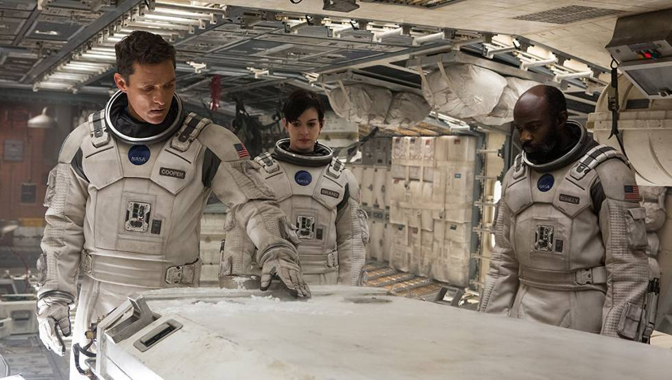
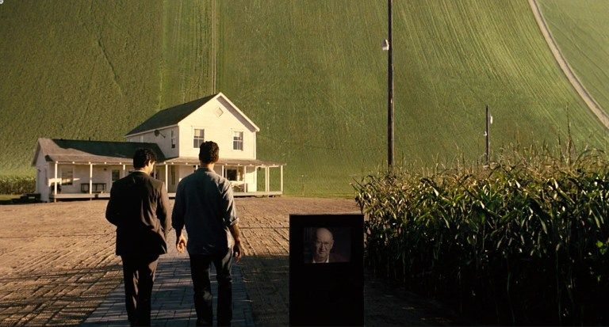

Interstellar (Interestelar, en Hispanoamérica) es una película de ciencia ficción británico-estadounidense y canadiense de 2014, dirigida por Christopher Nolan y protagonizada por Matthew McConaughey, Anne Hathaway, Jessica Chastain, Michael Caine y Matt Damon. Ambientada en un futuro distópico donde la humanidad está luchando por sobrevivir, cuenta la historia de un grupo de astronautas que viajan a través de un agujero de gusano cerca de Saturno en busca de un nuevo hogar para la humanidad.
Los hermanos Christopher y Jonathan Nolan escribieron el guion, que tuvo su origen en un borrador que Jonathan desarrolló en 2007. Christopher Nolan produjo la película junto a su esposa Emma Thomas mediante su compañía productora Syncopy, y con Lynda Obst a través de Lynda Obst Productions. El físico teórico Kip Thorne, cuyo trabajo inspiró la película, fue productor ejecutivo y participó como consultor científico. Warner Bros., Paramount Pictures y Legendary Pictures cofinanciaron la película.
Interstellar se estrenó el 26 de octubre de 2014 en Los Ángeles. En América del Norte se lanzó en película fotográfica, expandiendo su disponibilidad a otros lugares usando proyectores digitales. En los Premios de la Academia de 2014, la película ganó el Óscar a los mejores efectos visuales, y fue nominada por mejor banda sonora, mejor sonido y mejor diseño de producción. Recibió también varios premios y nominaciones, en particular por sus efectos visuales, fotografía, banda sonora y la actuación de Mackenzie Foy.
ARGUMENTO
A mediados del siglo XXI, la destrucción de las cosechas en la Tierra ha hecho que la agricultura sea cada vez más difícil y se vea amenazada la supervivencia de la humanidad. Joseph Cooper, viudo, exingeniero y piloto de la NASA, dirige una granja con su suegro Donald, su hijo Tom y su hija Murph, quien cree que su habitación está embrujada por un poltergeist. Cuando aparecen inexplicablemente extraños patrones de polvo en el suelo de la habitación de Murph, Cooper se da cuenta de que la gravedad está detrás de su formación, no un "fantasma". Interpreta el patrón como un conjunto de coordenadas geográficas formadas en código binario. Cooper y Murph siguen las coordenadas a una instalación secreta de la NASA, donde se encuentran con el exprofesor de Cooper, el doctor Brand.
Brand revela que, misteriosamente, un agujero de gusano apareció cerca de Saturno hace 48 años, abriendo un camino a una galaxia distante con algunos planetas potencialmente habitables. Bajo su dirección, doce voluntarios viajaron a través del agujero para evaluar la idoneidad de cada planeta como nuevo hogar de la humanidad. Los voluntarios Miller, Edmunds y Mann enviaron datos alentadores de planetas cerca de un agujero negro supermasivo llamado Gargantúa. Brand recluta a Cooper para pilotar la nave espacial Endurance con el fin de investigar más, mientras trabaja en el "Plan A", una teoría gravitatoria de la propulsión que permitiría el éxodo desde la Tierra a esos nuevos planetas. El Endurance también lleva 5000 embriones congelados para el "Plan B", que es colonizar un planeta habitable para asegurar la supervivencia de la humanidad. Antes de que Cooper se vaya, se despide de Murph llevándose un reloj de pulsera y dejándole otro para comprobar la diferencia en el tiempo cuando vuelva, debida a los efectos relativistas de los viajes espaciales. Ella le da un último mensaje del "fantasma" que dice "Quédate". Como Cooper cree que es una excusa para que él no se vaya, Murph se enfada y no vuelve a ver a su padre. Antes de que Cooper se vaya, se cae un libro del estante de la habitación de Murph.
La tripulación de Cooper está formada por los científicos Romilly, Doyle y Amelia (hija del doctor Brand) y los robots TARS y CASE, a bordo del "Endurance". Cooper y la tripulación se colocan en cápsulas de hipersueño, mientras que TARS y CASE preparan la nave para el trayecto hasta Saturno dejándola en piloto automático, el cual durará dos años. Al llegar a Saturno, despiertan y se alistan para entrar en la órbita del planeta. Una vez allí, atravesando el agujero de gusano se dirigen primero al planeta de Miller, un mundo oceánico donde el tiempo está severamente dilatado debido a su proximidad a Gargantúa: por cada hora allí, pasan siete años en la Tierra. Deciden dejar la nave Endurance a una distancia adecuada del planeta Miller para que quien quede arriba, mientras otros exploran, no se vea afectado por los efectos de la dilatación temporal. Arriba se queda Romilly, y los demás bajan a explorar. Solo encuentran los restos de la expedición de Miller. Amelia recupera los datos de Miller justo antes de la llegada de una ola gigantesca, la cual mata a Doyle y mete agua en los motores, retrasando su salida. Después de regresar con mucha dificultad al Endurance, descubren que han transcurrido 23 años en la Tierra, lo que se refleja en Romilly, ya que también vio pasar todo ese tiempo en videos mientras ellos estaban en el planeta, aunque en el Endurance transcurrieron 9 años.

Murph, ahora adulta, ha estado ayudando al doctor Brand con su investigación durante varios años. Este, en su lecho de muerte, le confiesa que el Plan A no era factible, lo que ha sabido desde antes de la partida del Endurance. También revela que el Plan B fue el único plan todo el tiempo. En una sesión de video grabada y enviada al Endurance, Murph notifica a Amelia de la muerte de su padre, acusándola a ella y a Cooper de abandonar la Tierra, lo que horroriza a todos. Creyendo que las ecuaciones pueden ser resueltas, ella continúa trabajando en una solución al Plan A, sabiendo que necesita más datos sobre singularidades gravitacionales.
Con poco combustible, la tripulación elige el planeta de Mann en lugar del de Edmunds como la siguiente parada, ya que Mann sigue transmitiendo. Al llegar a este segundo planeta, tienen que despertar a Mann de su sueño, quien reacciona muy emotivamente al verlos, creyendo que nunca volvería a despertar. Una vez allí, Mann le asegura a la tripulación que el planeta congelado es habitable a pesar de su atmósfera cargada de amoníaco. Mientras inspeccionan el planeta, Mann intenta matar a Cooper, revelando que falsificó los datos que había transmitido con la esperanza de ser rescatado. Roba el vehículo explorador de Cooper y se dirige al Endurance. Mientras tanto, Romilly es asesinado por una trampa disparada por Mann. Amelia rescata a Cooper y persiguen a Mann hacia el Endurance en otro módulo de aterrizaje. Mann intenta una peligrosa operación manual de atraque, ignorando las advertencias de Cooper y perece en el intento, dañando gravemente al Endurance en el proceso. Cooper, con la ayuda de TARS, utiliza el módulo de aterrizaje para estabilizar la nave, en una arriesgada y complicada maniobra.
Las opciones por la supervivencia humana son cada vez menores, y la tripulación deberá ahora tomar decisiones más difíciles. CASE advierte a Cooper de que el Endurance está cayendo hacia el tirón gravitatorio de Gargantúa, debido a la explosión provocada por el Dr. Mann. Cooper decide utilizar a Gargantúa como asistencia gravitatoria para impulsar la nave hacia el planeta de Edmunds más rápido y ahorrar combustible, pero su proximidad a Gargantúa significa que pasará más tiempo en la Tierra. Para perder peso y permitir la maniobra, Cooper y TARS se separan de la nave y se lanzan hacia el agujero negro, a pesar de las súplicas de Brand de que no la abandonara; de esta forma Brand y CASE puedan completar el viaje.
Pasando por el horizonte de sucesos del agujero negro la nave de Cooper se destruye, Cooper y TARS se eyectan al espacio sin esperanzas de vivir para esperar su muerte en algunas horas por falta de oxígeno en su traje espacial, pero de forma sorpresiva aterrizan dentro de un "teseracto", o cubo tetradimensional, que se asemeja a muchos pasillos de estanterías en tres dimensiones, capaces de ver al otro lado la habitación de Murphy en diferentes períodos de su vida. Cooper supone que dentro del teseracto, el tiempo es una dimensión física que puede manipular, y que el teseracto y el agujero de gusano fueron creados por seres extradimensionales para permitir la comunicación con Murphy, y que él era su "fantasma" todo el tiempo; así mismo, deduce junto con TARS que estos seres son en realidad la humanidad de un lejano futuro la cual ha aprendido a manipular el tiempo como dimensión física.
Utilizando la segunda aguja en el reloj que Cooper le dio a su hija Murphy antes de que se fuera y estaba almacenado en la casa de campo desde hace algunos años, Cooper retransmite en código morse con la ayuda de TARS, que obtiene más información del teseracto, que él está al otro lado del agujero de gusano atrapado en un teseracto en el futuro y envía la información de los datos cuánticos que Murphy necesitaba para poder resolver la ecuación gravitatoria en el planeta Tierra y tratar de salvar a la población de humanos con el plan A, ofreciendo una nueva esperanza para trasladar la vida a otro planeta, después de varios años de experimentos con estas nuevas teorías obtenidas por Murphy, que ahora ha crecido y es una científica muy reconocida en la NASA.

Después de una eyección turbulenta del teseracto, Cooper despierta en un hospital de una nueva Estación Espacial construida por la humanidad durante muchos años, que orbita Saturno a una distancia muy cercana del agujero de gusano, gracias a toda la información obtenida por Murphy, cuando han pasado varios años en el tiempo de la Tierra, pero solamente algunos días al otro lado del agujero de gusano. Cooper, joven y fuerte, finalmente se reúne con su hija, ahora una anciana que se acerca a la muerte y llega a la Estación Espacial desde la Tierra especialmente para visitarlo, ella finalmente ha descubierto una solución científica que permita aplicar el plan A para salvar a la humanidad y preparar la colonización de nuevos planetas en el futuro con la nueva Estación Espacial.
A petición de su hija, Cooper la deja en su lecho al lado de su familia, y junto a TARS que ha sido reparada durante varias semanas, se instalaron nuevas baterías, recupera la información obtenida del teseracto y tiene más información científica de la Estación Espacial, planean tomar una pequeña y moderna nave espacial en secreto en el hangar de la Estación Espacial, la secuestran y parten a reunirse con Brand al otro lado del agujero de gusano, en un viaje directamente al planeta de Edmunds, donde Brand se encuentra totalmente sola en la superficie del planeta y han pasado solamente algunos días desde su partida al borde del agujero negro Gargantúa, tratando de preparar una nueva colonia humana en el planeta habitable de Edmunds (el cual había muerto) anteriormente.